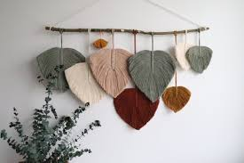
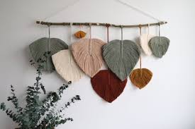

Te contamos un poco del macrame!
El origen exacto del macramé es desconocido, ya que es una técnica antigua que se ha utilizado en muchas culturas de todo el mundo durante miles de años. Sin embargo, se cree que el macramé se originó en el medio oriente, en áreas como Persia y Arabia, durante el siglo XIII. De allí, la técnica se extendió a otras partes del mundo, como África y América del Sur. El macramé se hizo muy popular en Europa durante el siglo XVII y XVIII, cuando los marineros lo llevaron a bordo de los barcos como una forma de pasar el tiempo durante los viajes largos. También se volvió popular durante la era victoriana, donde se utilizaba para decorar hogares y hacer encajes para vestidos y ropa de cama. Hoy en día, el macramé sigue siendo una forma popular de arte y manualidad en todo el mundo, y se ha convertido en una técnica de tejido muy versátil y creativa.
Hay varias piezas de macramé que son muy famosas y populares, pero una de las más reconocidas es el "colgante de pared de plumas" ("feather wall hanging" en inglés). Esta pieza icónica de macramé es un tapiz decorativo que presenta una serie de hilos entrelazados para formar una imagen en forma de pluma suspendida en una barra de madera o metal. El diseño simple y elegante de este colgante de pared ha hecho que sea muy popular en la decoración del hogar y ha sido reinterpretado y adaptado por muchos artistas y artesanos de todo el mundo.
Te dejamos unos ejemplos de estas piezas famosas.
.jpg) 
